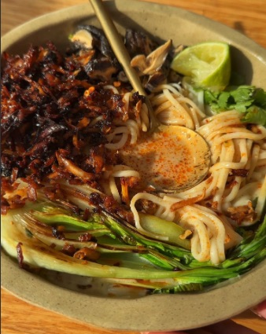

Creamy Coconut Miso Ramen with Umami Shredded Tofu

Original Recipe Source - @EllysPlate - Instagram
Ingredients (Serves 2)
For the Broth
- 1 tbsp Sesame Oil
- 4 Spring Onions, Chopped
- 1 tbsp Chopped Coriander Stalks
- 2 Cloves of Garlic, Minced
- 1 inch of Ginger, Minced
- 1.5 tbsp White Miso Paste
- 1 tbsp Light Soy Sauce
- 1 Chicken Stock Cube
- 6 Shittake Mushrooms
- 400ml-600ml Water (depending on how brothy you want it)
- 1/2 Tin of Coconut Milk
- Juice of 1 Lime
For the Tofu
- 200g Extra Firm Tofu
- 1 tbsp Dark Soy Sauce
- 1 tbsp Sesame Oil
- 1.5 tsp Agave syrup
To Serve
- 200g Dry Noodle, Cooked to Package Instructions
- Pak Choi
- Fresh Coriander
- Fresh Lime
- Chilli Oil
Method
- Preheat oven to 180c
- Start by prepping your tofu, grate on the thick setting of a grater and place on a baking sheet with the remaining ingredients.
- Bake or airfry for 12-18 mins (longer if you're using an oven, shorter if you're airfrying), turning regularly as this will catch quickly.
- Heat the sesame oil in a small saucepan on medium heat before adding the spring onions coriander stalks, garlic and ginger and frying off for 5 minutes.
- Add the remaining ingredients to the pan (aside from the lime) along with however much water you like, reduce to low heat and leave to simmer for 10 minutes.
- Once this has finished simmering, add the lime juice.
- Split the broth between two bowls, add your noodles, veggies of choice and garnish with the crispy tofu.